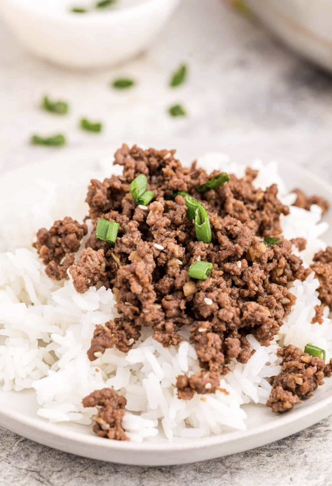
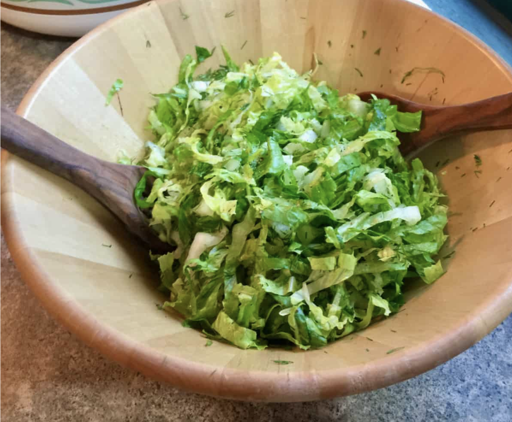

Teriyaki Ground Beef Plate Recipe
ingredients
- 1/2 pound ground beef
- 1 romain lettuce head
- 1 cup of white rice
- 1 rice cooker
- 2 tablespoons of teriyaki sauce
- salad dressing of your choice
steps
- wash rice three times in rice pot
- then add water to rice pot so that when you touch the rice with the tip of your pinky the water level reaches your first knuckle
- then put rice pot in rice cooker with the lid and set to cook
- Then place a pan on the stove on medium heat about a 6 out of 10
- Once the pan is heated place ground beef in the pan
- Cook until brown and then add your teriyali sauce
- take off of heat and stir
- Next chop up your lettuce and add your dressing
- Then gather however much rice, ground beef, and salad you want and enjoy


Another Teriyaki Ground Beef Recipe